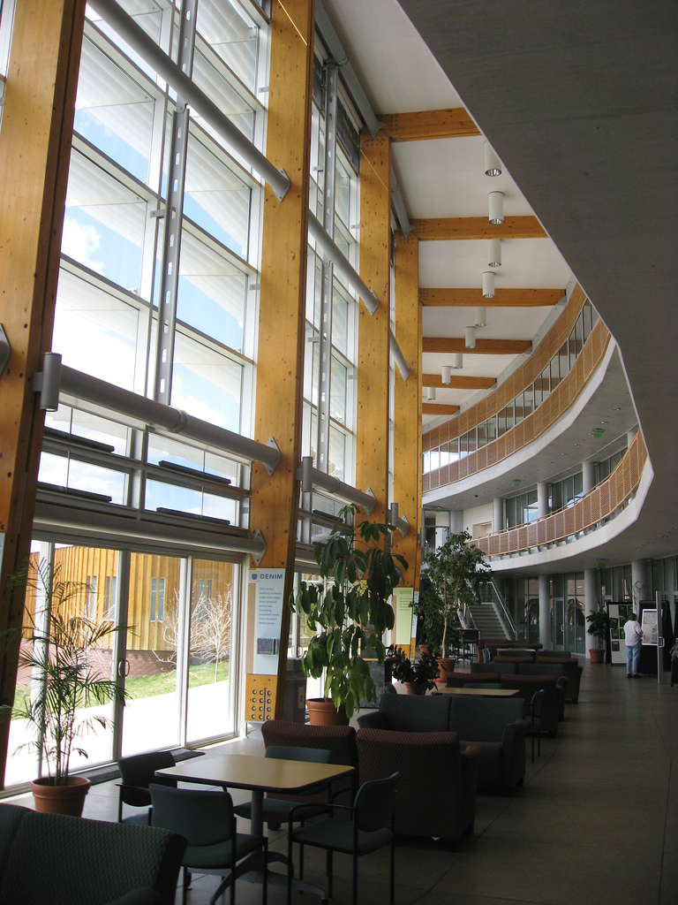

| The Caporaso Lab is located in the Center for Microbial Genetics and Genomics at Northern Arizona University. We are an applied bioinformatics lab, developing and using software for studying communities of micro-organisms. |
 Photo by gwarcita. | |
Teaching
Dr. Caporaso teaches graduate and undergraduate bioinformatics in the Biology and Computer Science departments at Northern Arizona University. You can find course websites and teaching materials on Dr. Caporaso's teaching website.
An Introduction to Applied Bioinformatics (or IAB) is an open source and free [IPython Notebook](http://ipython.org/notebook.html)-based introductory bioinformatics textbook being developed in the Caporaso Lab. For more information on IAB, see Dr. Caporaso's recent microbe.net blog post on IAB and the IAB website.
Software
All of the software developed in the Caporaso Lab is open source and free, and most of it is hosted under the biocore GitHub organization. You can find the latest information on the individual projects by looking them up there, or see a list of the lab's major software projects on the Software page. Head to help.qiime.org if you're looking for help with using QIIME.
Jobs
We are always on the lookout for exceptional post-doctoral scholars, graduate students, undergraduate students, research technicians, and software engineers (Python programmers, typically) to join the lab. If you're interested in the human microbiome, microbiology of the built environment (e.g., offices, homes, hospitals, etc), or developing open source bioinformatics software and would like to work in the Caporaso Lab, you should e-mail Greg. Be sure to describe your research interests in your e-mail, and attach a CV or resume as a PDF.
Finding us
We're physically located in Room 220 of the Applied Research and Development (ARD) building at Northern Arizona University [map]. Dr. Caporaso's office is located in Room 224 of ARD, which is in the Room 220 office suite.
News For updates on work being done in the Caporaso Lab, you can follow Greg on Twitter: